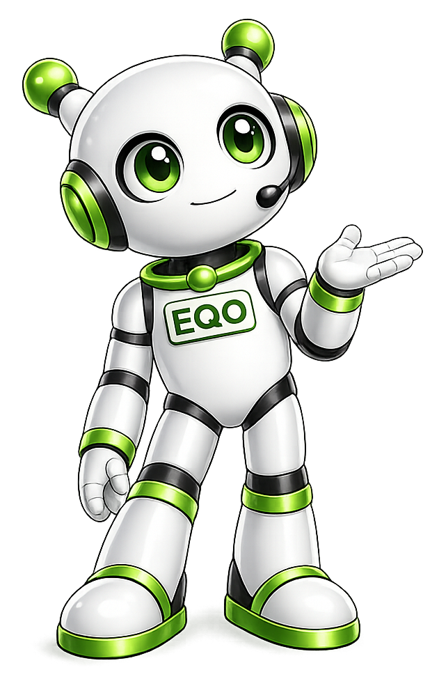

أهلاً! أنا إيكو، اسألني عن المشروع.


فهم عميق لجذور المشكلة وحجم التأثير – لتقديم حل دقيق ومؤثر من خلال سبع مراحل تحليلية متكاملة
خلفية السوق والبيئة التشغيلية
يشهد القطاع المصرفي المصري نمواً رقمياً متسارعاً بدعم من البنك المركزي ومبادرة الشمول المالي، حيث بلغ عدد البنوك العاملة 31 بنكاً حكومياً وخاصاً وإسلامياً. يتنافسون عبر عشرات المنتجات المالية المعقدة.
يعاني المواطن العادي من عدم تماثل المعلومات مع البنوك؛ حيث يصعب مقارنة أسعار الفائدة، الرسوم الإدارية، فترات السماح، والمرونة. غياب جهة محايدة وموحدة للمقارنة يخلق حالة من العشوائية في اتخاذ القرار.
وفقاً لدراسات سلوكية، يقضي المستخدم العادي ما بين 15 إلى 30 ساعة في البحث اليدوي عبر مواقع البنوك وزيارة الفروع للحصول على عرض واضح، مما يثقل كاهل الأفراد ويقلل الإنتاجية.
أسباب تعقيد الاختيار المالي
كل بنك يعرض منتجاته بأسلوب مختلف: نسبة عائمة، هامش ربح، إدارة عمولة، مصاريف إدارية، تأمين إجباري، مصاريف فتح ملف — هذه الفروق تجعل المقارنة شبه مستحيلة يدوياً.
لا توجد منصة محلية متخصصة تجمع البيانات بشكل لحظي ومحايد، وتقوم بتحليلها وفقاً لاحتياجات المستخدم (الدخل، مدة القرض، الهدف من الوديعة).
ما يزيد عن 38% من العملاء يكتشفون رسوماً إضافية أو شروطاً غير متوقعة بعد التعاقد، مما يؤدي إلى ندم وتوتر مالي (مصدر: هيئة الرقابة المالية 2024).
ما الذي يفعله المستخدمون اليوم؟
اللجوء إلى بنك العلاقة (حساب المرتب) والاكتفاء بعرضه فقط دون مقارنة، مما قد يفوّت على العميل عروضاً أفضل بنسبة فائدة تصل إلى 2% سنوياً.
استخدام محركات البحث ومواقع البنوك المتفرقة، عملية شاقة وتستغرق أياماً وغالباً ما تحتوي معلومات غير محدثة أو ناقصة.
الاعتماد على توصيات شخصية غير موضوعية، والتي لا تأخذ في الاعتبار الوضع المالي الفريد للفرد، وتؤدي إلى قرارات غير محسوبة.
خيار متاح لكنه مكلف (متوسط 2000 جنيهاً للاستشارة) وغير متاح لشريحة كبيرة من المجتمع.
من يعاني من المشكلة بشدة؟
يبدأون حياتهم المهنية ويحتاجون قروضاً شخصية أو شراء سيارة، قلة الخبرة المصرفية تجعلهم عرضة لشروط غير ملائمة.
يحتاجون تمويلات عقارية أو قروض عائلية، وغالباً ما يتعجلون القرار ويقعون في فخ أعلى الفوائد.
يبحثون عن تمويل المشروعات الصغيرة والمتوسطة، تختلف شروط البنوك بشكل كبير وتحتاج لمعرفة دقيقة.
يريدون أفضل عائد ادخاري آمن. تعدد الأوعية الادخارية والودائع الثابتة يربكهم ويحرمهم من عوائد أفضل قد تصل إلى +3% سنوياً.
الأبعاد النفسية لتعقيد الاختيار
الخوف من عدم القدرة على السداد بسبب سوء فهم الفوائد أو الجداول غير الواضحة، مما يؤثر على الصحة النفسية.
بعد اكتشاف وجود عرض أفضل في بنك آخر بعد توقيع العقد، يشعر العميل بالغبن وعدم العدالة.
كثرة الأرقام والنسب واختلاف الصيغ المصرفية تؤدي إلى إجهاد اتخاذ القرار، مما يدفع الكثيرين إلى تجنب المنتجات المصرفية المفيدة.
تكلفة عدم وجود حل
فرق 1% في سعر فائدة قرض عقاري بقيمة مليون جنيه على 20 سنة يؤدي إلى تكلفة إضافية تتجاوز 200 ألف جنيه. المقارنة الصحيحة توفر مبالغ ضخمة.
في المتوسط 20 ساعة لكل عملية بحث عن قرض أو وديعة، تُضرب في ملايين العملاء سنوياً = خسارة إنتاجية بملايين الساعات.
أكثر من 42% من المقترضين يعبرون عن ندمهم لاختيار منتج غير مناسب بسبب نقص المعلومات، مما يقلل الثقة في القطاع المصرفي.
في الأسواق التي توفر أدوات مقارنة شفافة، ترتفع نسبة المقارنة من 20% إلى 85%، مما يحفز البنوك على تحسين عروضها.
لماذا لا تفي البدائل بالغرض؟
غير محايد، يعرض منتجات بنكه فقط وقد تكون غير الأفضل في السوق، وموظف البنك قد لا يقدم المشورة الكاملة.
شاق، غير موحد، وبعض المعلومات تكون قديمة أو غير دقيقة، ويتطلب مستوى عالٍ من الثقافة المالية.
ذاتية، قد تنبع من تجربة مختلفة تماماً عن احتياجات المستخدم الحالي، كما أنها لا تعكس كل السوق.
مكلف للشريحة المتوسطة، وغير متاح في كل المناطق، بالإضافة إلى احتمال تضارب المصالح.
من خلال تحليل Problem Statement Canvas نجد أن السوق المصري بحاجة ماسة لمنصة BanqOK التي تدمج البيانات وتقدم توصيات ذكية محايدة، مما يعزز الشمول المالي ويوفر الوقت والمال للمستخدمين.